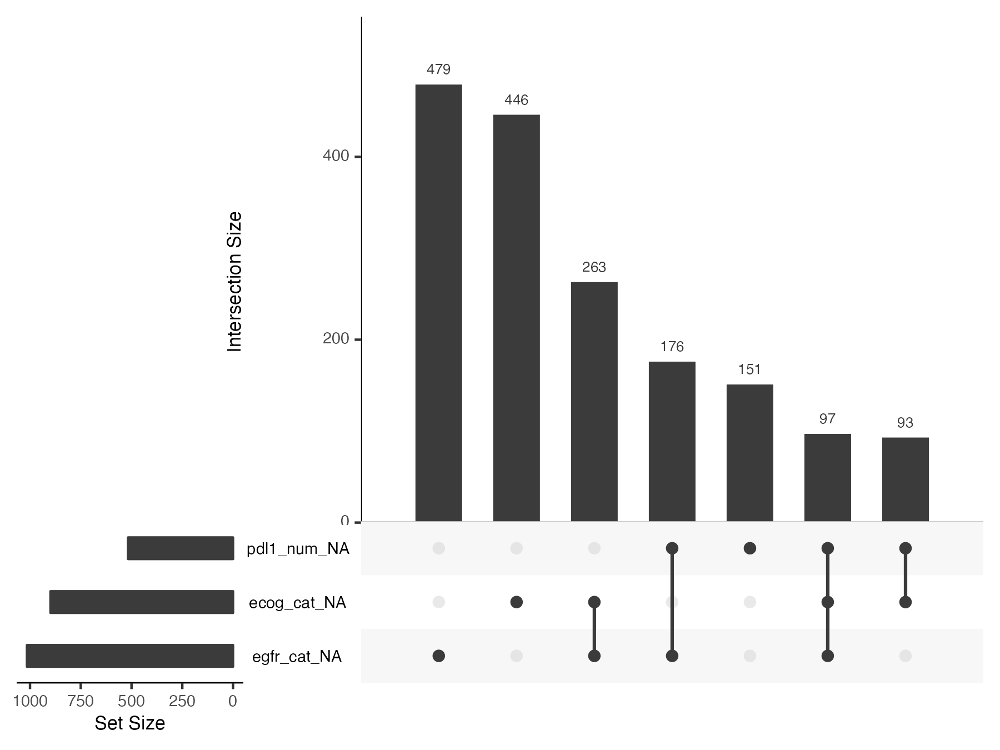

Routine structural missing data diagnostics
Janick Weberpals
routine_diagnostics.Rmd
smdi main functionalities
The smdi flagship function is
smdi_diagnose() which calls multiple sub-functions which
are also accessible separately. smdi_diagnose() builds on
theoretical concepts developed and validated in a comprehensive
simulation study as part of the FDA Sentinel Innovation Center
workstream Approaches
to Handling Partially Observed Confounder Data From Electronic Health
Records (EHR) In Non-randomized Studies of Medication Outcomes.
For details, we refer to [INSERT REFERENCE ONCE PUBLISHED] and [INSERT JSS REFERENCE ONCE PUBLISHED].
In brief, smdi_diagnose() compute three group
diagnostics.

Illustrative dataset
To illustrate the usage of the smdi package main
functions, we use the smdi_data dataset which is an example
dataset that comes bundled with the package. In brief, the
smdi_data dataset consists of a simulated lung cancer
cohort with a fictional comparison of two antineoplastic systemic
therapy regimens and a time-to-event outcome. More information on the
underlying dataset is given in the previous Data
generation article.
smdi_data %>%
dplyr::glimpse()
#> Rows: 2,500
#> Columns: 14
#> $ exposure <int> 1, 1, 0, 1, 1, 0, 1, 0, 1, 1, 0, 1, 1, 0, 0, 1, 1, 0, 0,…
#> $ age_num <dbl> 35.24, 51.18, 88.17, 50.79, 40.52, 64.57, 73.58, 42.38, …
#> $ female_cat <fct> 1, 0, 0, 0, 0, 0, 0, 1, 1, 1, 1, 0, 0, 1, 0, 0, 1, 1, 1,…
#> $ smoking_cat <fct> 1, 1, 0, 1, 1, 0, 1, 1, 1, 0, 0, 1, 1, 1, 1, 0, 1, 0, 1,…
#> $ physical_cat <fct> 0, 1, 0, 0, 0, 0, 0, 0, 1, 0, 0, 0, 0, 0, 1, 0, 1, 0, 0,…
#> $ alk_cat <fct> 0, 0, 0, 0, 0, 0, 0, 0, 0, 0, 0, 0, 0, 0, 0, 0, 0, 0, 0,…
#> $ histology_cat <fct> 1, 1, 0, 0, 0, 0, 0, 0, 0, 0, 0, 1, 0, 0, 0, 0, 1, 0, 0,…
#> $ ses_cat <fct> 2_middle, 3_high, 2_middle, 2_middle, 2_middle, 2_middle…
#> $ copd_cat <fct> 1, 0, 1, 1, 1, 0, 1, 1, 1, 1, 0, 1, 1, 1, 1, 0, 1, 0, 1,…
#> $ eventtime <dbl> 5.000000000, 4.754220474, 0.253391563, 5.000000000, 5.00…
#> $ status <int> 0, 1, 1, 0, 0, 1, 1, 0, 1, 1, 1, 1, 1, 1, 1, 0, 0, 1, 1,…
#> $ ecog_cat <fct> 1, NA, 0, 1, NA, 0, 1, 0, 1, NA, 1, NA, NA, 1, 1, 0, 1, …
#> $ egfr_cat <fct> NA, 0, 1, NA, 1, NA, NA, 0, NA, 0, 1, NA, 0, NA, NA, 0, …
#> $ pdl1_num <dbl> 45.03, NA, 41.74, 45.51, 31.28, NA, 47.28, 37.28, 46.47,…The dataset consists of 2,500 patients and 14 variables with
exposure representing the two treatment regimens under
comparison and status and eventtime the vital
status and censoring time, respectively. For more information, please
checkout:
# dataset with simulated missingness
?smdi::smdi_data()
# complete dataset
?smdi::smdi_data_complete()Descriptives
As with basically any first step into exploring (new) datasets, it’s
a good idea to get an overview of partially observed covariates and the
magnitude of missingness. For this smdi comes with two
convenient functions to screen the data for missingness.
This can be either as a table …
smdi_data %>%
smdi_summarize()
#> # A tibble: 3 × 3
#> covariate n_miss perc_miss
#> <chr> <int> <chr>
#> 1 egfr_cat 1015 40.60%
#> 2 ecog_cat 899 35.96%
#> 3 pdl1_num 517 20.68%… or visually
covars_missing <- smdi_summarize(data = smdi_data) %>%
pull(covariate)
smdi_data %>%
smdi_vis(covar = covars_missing)
For smdi_vis, it’s also possible to query the
top n missing covariates in a dataset:

Group 1 diagnostics: differences in covariate distributions
Median/average absolute standardized mean differences
Cite STRATOS paper
asmd <- smdi_asmd(data = smdi_data)
asmd
#> $egfr_cat
#> $egfr_cat$asmd_covar
#> [1] "egfr_cat"
#>
#> $egfr_cat$asmd_table1
#> Stratified by egfr_cat_NA
#> 0 1 p test SMD
#> n " 1485" " 1015" "" "" ""
#> exposure (mean (SD)) " 0.32 (0.47)" " 0.51 (0.50)" "<0.001" "" " 0.393"
#> age_num (mean (SD)) "60.44 (13.80)" "61.58 (14.61)" " 0.048" "" " 0.080"
#> female_cat = 1 (%) " 457 (30.8) " " 465 (45.8) " "<0.001" "" " 0.313"
#> smoking_cat = 1 (%) " 608 (40.9) " " 645 (63.5) " "<0.001" "" " 0.465"
#> physical_cat = 1 (%) " 454 (30.6) " " 428 (42.2) " "<0.001" "" " 0.243"
#> alk_cat = 1 (%) " 27 ( 1.8) " " 42 ( 4.1) " " 0.001" "" " 0.137"
#> histology_cat = 1 (%) " 225 (15.2) " " 283 (27.9) " "<0.001" "" " 0.314"
#> ses_cat (%) " " " " " 0.039" "" " 0.103"
#> 1_low " 287 (19.3) " " 237 (23.3) " "" "" ""
#> 2_middle " 596 (40.1) " " 373 (36.7) " "" "" ""
#> 3_high " 602 (40.5) " " 405 (39.9) " "" "" ""
#> copd_cat = 1 (%) " 661 (44.5) " " 677 (66.7) " "<0.001" "" " 0.458"
#> eventtime (mean (SD)) " 2.17 (1.86)" " 2.15 (1.76)" " 0.816" "" " 0.010"
#> status (mean (SD)) " 0.79 (0.41)" " 0.84 (0.37)" " 0.001" "" " 0.132"
#> ecog_cat = 1 (%) " 539 (57.0) " " 433 (66.1) " "<0.001" "" " 0.189"
#> pdl1_num (mean (SD)) "44.07 (10.37)" "49.33 (11.31)" "<0.001" "" " 0.485"
#>
#> $egfr_cat$asmd_plot
#>
#> $egfr_cat$asmd_aggregate
#> # A tibble: 1 × 2
#> covariate asmd_median
#> <chr> <dbl>
#> 1 egfr_cat 0.243
#>
#>
#> $ecog_cat
#> $ecog_cat$asmd_covar
#> [1] "ecog_cat"
#>
#> $ecog_cat$asmd_table1
#> Stratified by ecog_cat_NA
#> 0 1 p test SMD
#> n " 1601" " 899" "" "" ""
#> exposure (mean (SD)) " 0.40 (0.49)" " 0.39 (0.49)" " 0.503" "" " 0.028"
#> age_num (mean (SD)) "61.05 (14.03)" "60.64 (14.34)" " 0.482" "" " 0.029"
#> female_cat = 1 (%) " 594 (37.1) " " 328 (36.5) " " 0.792" "" " 0.013"
#> smoking_cat = 1 (%) " 790 (49.3) " " 463 (51.5) " " 0.320" "" " 0.043"
#> physical_cat = 1 (%) " 547 (34.2) " " 335 (37.3) " " 0.131" "" " 0.065"
#> alk_cat = 1 (%) " 45 ( 2.8) " " 24 ( 2.7) " " 0.937" "" " 0.009"
#> histology_cat = 1 (%) " 326 (20.4) " " 182 (20.2) " " 0.985" "" " 0.003"
#> ses_cat (%) " " " " " 0.537" "" " 0.047"
#> 1_low " 346 (21.6) " " 178 (19.8) " "" "" ""
#> 2_middle " 612 (38.2) " " 357 (39.7) " "" "" ""
#> 3_high " 643 (40.2) " " 364 (40.5) " "" "" ""
#> copd_cat = 1 (%) " 853 (53.3) " " 485 (53.9) " " 0.779" "" " 0.013"
#> eventtime (mean (SD)) " 2.13 (1.80)" " 2.22 (1.86)" " 0.239" "" " 0.049"
#> status (mean (SD)) " 0.82 (0.39)" " 0.79 (0.41)" " 0.085" "" " 0.071"
#> egfr_cat = 1 (%) " 194 (20.5) " " 116 (21.5) " " 0.692" "" " 0.025"
#> pdl1_num (mean (SD)) "46.29 (11.07)" "45.59 (10.95)" " 0.179" "" " 0.063"
#>
#> $ecog_cat$asmd_plot
#>
#> $ecog_cat$asmd_aggregate
#> # A tibble: 1 × 2
#> covariate asmd_median
#> <chr> <dbl>
#> 1 ecog_cat 0.0292
#>
#>
#> $pdl1_num
#> $pdl1_num$asmd_covar
#> [1] "pdl1_num"
#>
#> $pdl1_num$asmd_table1
#> Stratified by pdl1_num_NA
#> 0 1 p test SMD
#> n " 1983" " 517" "" "" ""
#> exposure (mean (SD)) " 0.43 (0.50)" " 0.27 (0.45)" "<0.001" "" " 0.338"
#> age_num (mean (SD)) "60.60 (14.04)" "62.07 (14.47)" " 0.036" "" " 0.103"
#> female_cat = 1 (%) " 717 (36.2) " " 205 (39.7) " " 0.157" "" " 0.072"
#> smoking_cat = 1 (%) " 990 (49.9) " " 263 (50.9) " " 0.739" "" " 0.019"
#> physical_cat = 1 (%) " 707 (35.7) " " 175 (33.8) " " 0.476" "" " 0.038"
#> alk_cat = 1 (%) " 44 ( 2.2) " " 25 ( 4.8) " " 0.002" "" " 0.142"
#> histology_cat = 1 (%) " 411 (20.7) " " 97 (18.8) " " 0.354" "" " 0.049"
#> ses_cat (%) " " " " " 0.925" "" " 0.020"
#> 1_low " 413 (20.8) " " 111 (21.5) " "" "" ""
#> 2_middle " 772 (38.9) " " 197 (38.1) " "" "" ""
#> 3_high " 798 (40.2) " " 209 (40.4) " "" "" ""
#> copd_cat = 1 (%) " 1057 (53.3) " " 281 (54.4) " " 0.707" "" " 0.021"
#> eventtime (mean (SD)) " 2.20 (1.82)" " 1.99 (1.81)" " 0.019" "" " 0.117"
#> status (mean (SD)) " 0.80 (0.40)" " 0.83 (0.38)" " 0.217" "" " 0.062"
#> ecog_cat = 1 (%) " 779 (61.1) " " 193 (59.0) " " 0.523" "" " 0.043"
#> egfr_cat = 1 (%) " 252 (20.3) " " 58 (23.8) " " 0.258" "" " 0.084"
#>
#> $pdl1_num$asmd_plot
#>
#> $pdl1_num$asmd_aggregate
#> # A tibble: 1 × 2
#> covariate asmd_median
#> <chr> <dbl>
#> 1 pdl1_num 0.0619
#>
#>
#> attr(,"class")
#> [1] "asmd"
summary(asmd)
#> # A tibble: 3 × 2
#> covariate asmd_median
#> <chr> <chr>
#> 1 egfr_cat 0.243
#> 2 ecog_cat 0.029
#> 3 pdl1_num 0.062
asmd$egfr_cat$asmd_table1
#> Stratified by egfr_cat_NA
#> 0 1 p test SMD
#> n " 1485" " 1015" "" "" ""
#> exposure (mean (SD)) " 0.32 (0.47)" " 0.51 (0.50)" "<0.001" "" " 0.393"
#> age_num (mean (SD)) "60.44 (13.80)" "61.58 (14.61)" " 0.048" "" " 0.080"
#> female_cat = 1 (%) " 457 (30.8) " " 465 (45.8) " "<0.001" "" " 0.313"
#> smoking_cat = 1 (%) " 608 (40.9) " " 645 (63.5) " "<0.001" "" " 0.465"
#> physical_cat = 1 (%) " 454 (30.6) " " 428 (42.2) " "<0.001" "" " 0.243"
#> alk_cat = 1 (%) " 27 ( 1.8) " " 42 ( 4.1) " " 0.001" "" " 0.137"
#> histology_cat = 1 (%) " 225 (15.2) " " 283 (27.9) " "<0.001" "" " 0.314"
#> ses_cat (%) " " " " " 0.039" "" " 0.103"
#> 1_low " 287 (19.3) " " 237 (23.3) " "" "" ""
#> 2_middle " 596 (40.1) " " 373 (36.7) " "" "" ""
#> 3_high " 602 (40.5) " " 405 (39.9) " "" "" ""
#> copd_cat = 1 (%) " 661 (44.5) " " 677 (66.7) " "<0.001" "" " 0.458"
#> eventtime (mean (SD)) " 2.17 (1.86)" " 2.15 (1.76)" " 0.816" "" " 0.010"
#> status (mean (SD)) " 0.79 (0.41)" " 0.84 (0.37)" " 0.001" "" " 0.132"
#> ecog_cat = 1 (%) " 539 (57.0) " " 433 (66.1) " "<0.001" "" " 0.189"
#> pdl1_num (mean (SD)) "44.07 (10.37)" "49.33 (11.31)" "<0.001" "" " 0.485"
asmd$egfr_cat$asmd_plot
Hotelling’s and Little’s hypothesis tests
h0 <- smdi_hotelling(data = smdi_data)
h0
#> $egfr_cat
#> Test stat: 569.82
#> Numerator df: 14
#> Denominator df: 2485
#> P-value: 0
#>
#> $ecog_cat
#> Test stat: 9.7519
#> Numerator df: 14
#> Denominator df: 2485
#> P-value: 0.7834
#>
#> $pdl1_num
#> Test stat: 127.31
#> Numerator df: 14
#> Denominator df: 2485
#> P-value: 0
#>
#> attr(,"class")
#> [1] "hotelling"
h0$ecog_cat
#> Test stat: 9.7519
#> Numerator df: 14
#> Denominator df: 2485
#> P-value: 0.7834Little’s global
h0_global <- smdi_little(data = smdi_data)
h0_global
#> $statistic
#> [1] 801.0009
#>
#> $df
#> [1] 86
#>
#> $p.value
#> [1] 0
#>
#> $missing.patterns
#> [1] 8
#>
#> attr(,"class")
#> [1] "little"
#> attr(,"row.names")
#> [1] 1Group 2 diagnostics: ability to predict missingness
auc <- smdi_rf(data = smdi_data)
auc
#> $egfr_cat
#> $egfr_cat$rf_table
#> # A tibble: 1 × 2
#> covariate rf_auc
#> <chr> <chr>
#> 1 egfr_cat 0.629
#>
#> $egfr_cat$rf_plot
#>
#>
#> $ecog_cat
#> $ecog_cat$rf_table
#> # A tibble: 1 × 2
#> covariate rf_auc
#> <chr> <chr>
#> 1 ecog_cat 0.510
#>
#> $ecog_cat$rf_plot
#>
#>
#> $pdl1_num
#> $pdl1_num$rf_table
#> # A tibble: 1 × 2
#> covariate rf_auc
#> <chr> <chr>
#> 1 pdl1_num 0.516
#>
#> $pdl1_num$rf_plot
#>
#>
#> attr(,"class")
#> [1] "rf"Group 3 diagnostics: association between missingness and outcome
Fitting an outcome model with the missingness indicator crude and conditional on all other prognostic covariates would indicate a meaningful difference in the outcome between patients with vs w/o the observed confounder conditional on other covariates that could explain that difference.
MCAR: No association in neither crude nor adjusted model MAR: Association in crude but not adjusted model MNAR: If there was a meaningful difference also after comprehensive adjustment (log HR), this may be indicative of differential MNAR scenarios
smdi_outcome(
data = smdi_data,
model = "cox",
form_lhs = "Surv(eventtime, status)"
)
#> # A tibble: 3 × 3
#> covariate estimate_crude estimate_adjusted
#> <chr> <glue> <glue>
#> 1 egfr_cat 0.06 (95% CI -0.03, 0.15) -0.01 (95% CI -0.10, 0.09)
#> 2 ecog_cat -0.06 (95% CI -0.16, 0.03) -0.06 (95% CI -0.16, 0.03)
#> 3 pdl1_num 0.12 (95% CI 0.01, 0.23) 0.11 (95% CI -0.00, 0.22)
smdi_outcome(
data = smdi_data,
model = "logistic",
form_lhs = "exposure"
)
#> # A tibble: 3 × 3
#> covariate estimate_crude estimate_adjusted
#> <chr> <glue> <glue>
#> 1 egfr_cat 0.79 (95% CI 0.63, 0.96) 0.98 (95% CI 0.79, 1.18)
#> 2 ecog_cat -0.06 (95% CI -0.22, 0.11) -0.08 (95% CI -0.26, 0.10)
#> 3 pdl1_num -0.71 (95% CI -0.92, -0.50) -0.88 (95% CI -1.11, -0.65)
smdi_outcome(
data = smdi_data,
model = "linear",
form_lhs = "eventtime"
)
#> # A tibble: 3 × 3
#> covariate estimate_crude estimate_adjusted
#> <chr> <glue> <glue>
#> 1 egfr_cat -0.02 (95% CI -0.16, 0.13) 0.18 (95% CI 0.08, 0.28)
#> 2 ecog_cat 0.09 (95% CI -0.06, 0.24) -0.00 (95% CI -0.10, 0.09)
#> 3 pdl1_num -0.21 (95% CI -0.39, -0.04) -0.11 (95% CI -0.23, -0.00)
smdi_diagnose(
data = smdi_data,
covar = NULL,
model = "cox",
form_lhs = "Surv(eventtime, status)"
)
#> smdi summary table:
#> # A tibble: 3 × 6
#> covariate asmd_median hotteling_p rf_auc estimate_crude estimate…¹
#> <chr> <chr> <chr> <chr> <glue> <glue>
#> 1 egfr_cat 0.243 <.001 0.629 0.06 (95% CI -0.03, 0.15) -0.01 (95…
#> 2 ecog_cat 0.029 0.783 0.510 -0.06 (95% CI -0.16, 0.03) -0.06 (95…
#> 3 pdl1_num 0.062 <.001 0.516 0.12 (95% CI 0.01, 0.23) 0.11 (95%…
#> # … with abbreviated variable name ¹estimate_adjusted
#>
#> p_little: <.001